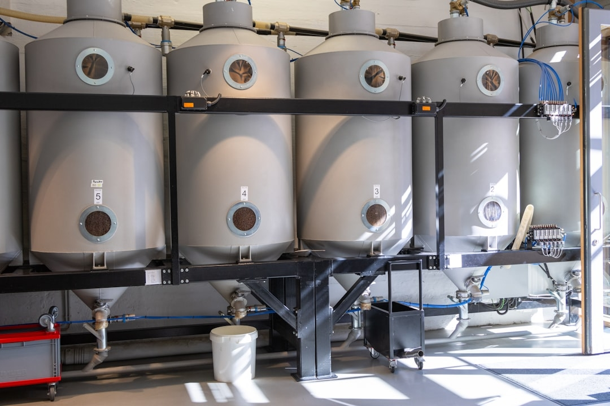
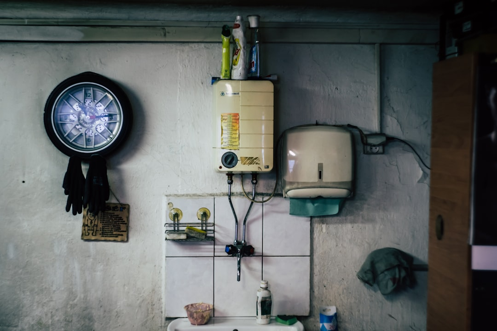
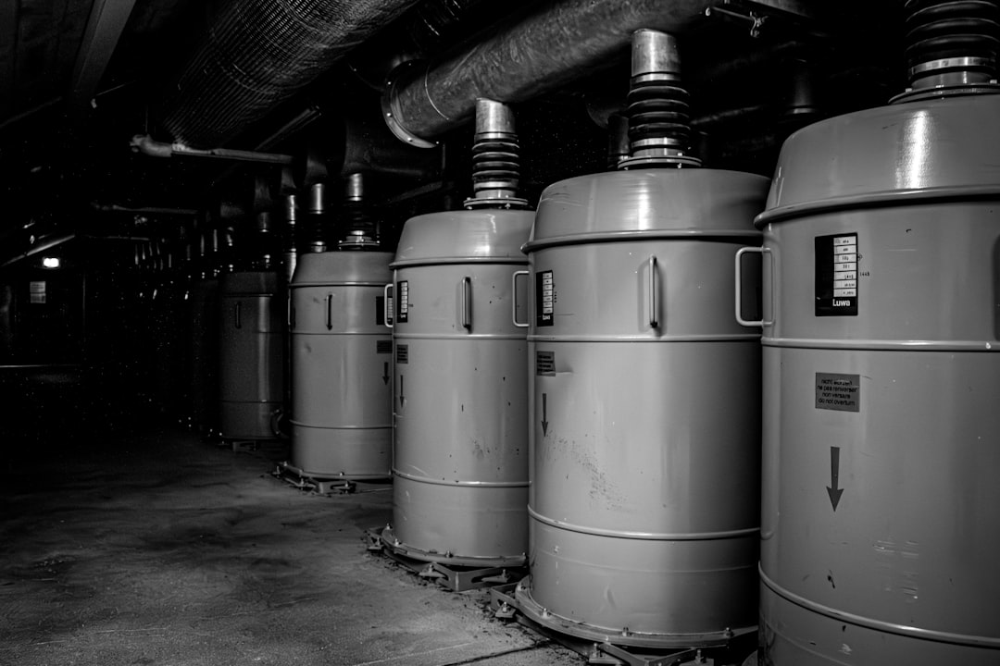
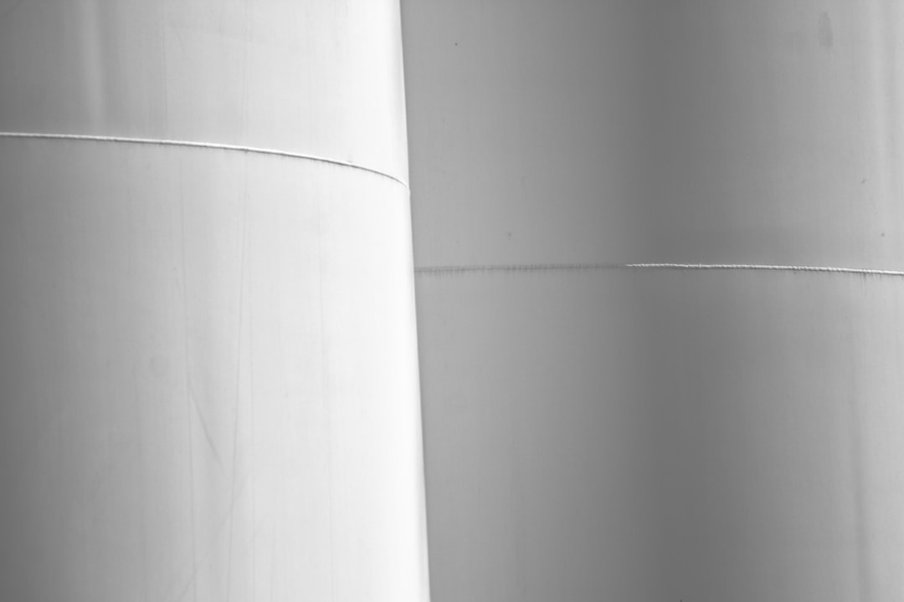

The distinction between direct and indirect cylinders should also be considered. A direct hot water cylinder uses immersion heaters to heat the stored water, whereas an indirect vented hot water cylinder receives its primary heat through the internal heat exchanger coil from an external source. An indirect vented cylinder with immersion can combine indirect heating with electrical backup, giving the installation additional flexibility.
Flexiheat UK indirect vented hot water cylinders are manufactured from duplex stainless steel. Stainless steel vented indirect hot water cylinders offer several advantages compared with traditional copper cylinders, including increased durability, good corrosion resistance and higher working pressure capabilities. This is particularly relevant in soft water areas where suitable stainless steel construction can provide a long service life.
The internal heat exchanger coils used within the stainless steel indirect vented hot water cylinders are manufactured from 316 stainless steel. The indirect coils are rated for a maximum operating temperature of 120°C and a maximum working pressure of 10 bar. The heat exchanger coil transfers heat from the external heat source into the stored domestic hot water without directly mixing the heating system water with the potable water stored inside the indirect vented hot water cylinder.
The traditional nature of an indirect vented water cylinder also means the system is familiar to many heating engineers. Indirect vented hot water cylinders have been widely used for decades and remain relevant where the property configuration, heat source or available water pressure makes an open vented system appropriate.
For customers comparing the best indirect vented hot water cylinders for UK homes, material construction, insulation, cylinder capacity and coil performance should therefore all be considered. The correct cylinder should also be compatible with the property's existing plumbing arrangement and external heat source.
The combination of duplex stainless steel construction, 316 stainless steel heat exchanger coils, factory-fitted insulation and multiple coil configurations allows Flexiheat UK to provide indirect vented hot water cylinders for a broad range of installations.

Flexiheat UK supplies indirect vented hot water cylinders designed for domestic, commercial and industrial hot water heating systems. An indirect vented hot water cylinder provides a practical method of storing and heating domestic hot water using an external heat source. Rather than relying entirely on an electric immersion heater, indirect vented hot water cylinders use a heat exchanger coil connected to a boiler, heat pump, solar thermal system or another suitable heat source. This arrangement combines hot water storage with a traditional open vented system that can provide dependable hot water for many types of UK properties.
The available Flexiheat UK capacities also make it possible to specify indirect vented hot water cylinders for requirements beyond standard houses. Larger homes with multiple bathrooms, properties with unusually high hot water demand and commercial or industrial buildings can select from higher-capacity cylinders and larger heat exchanger configurations. The range extends to 1,500 litres, with parallel arrangements available where even greater storage capacity is needed.
The Flexiheat UK stainless steel vented indirect hot water cylinder range has a maximum working pressure of 6 bar for the cylinder, equivalent to approximately 60 metres of static head. The stainless steel cylinder has a maximum operating temperature of 95°C. These pressure capabilities make the indirect vented cylinder range suitable for installations where there can be a significant vertical distance between the cold water storage cistern and the cylinder, including installations in basements of taller properties.
Open vented indirect hot water cylinders are particularly relevant when solid fuel appliances are used. Once a solid fuel fire is established, heat generation can continue and cannot necessarily be stopped immediately. An open vented arrangement provides an appropriate method of accommodating this characteristic and protecting the system against overheating.
For properties with an existing gravity-fed arrangement, installing an open vented indirect hot water cylinder can allow the traditional system configuration to be retained. This can be particularly useful in older UK houses where the plumbing and heating system has already been designed around a loft cistern and open vent pipe. Rather than changing the complete domestic hot water arrangement, an appropriate stainless steel vented indirect hot water cylinder can provide a modern replacement for an older cylinder.
The double extra-large coil indirect vented cylinder range can also be particularly suitable for heat pump systems. Heat pumps generally operate with lower flow temperatures than traditional boiler systems. A larger heat exchanger surface area and lower pressure drop can help the indirect vented hot water cylinder extract available heat from these lower-temperature heating circuits. Choosing the appropriate coil specification is therefore an important part of matching an indirect vented cylinder with a heat pump system.

Flexiheat UK can provide information on stock availability, delivery times, pricing and cylinder selection across its indirect vented hot water cylinder range. Customers can contact the Flexiheat UK sales team on 01202 822221 or use the company's website contact form to discuss their requirements and identify an indirect vented cylinder suited to their domestic, commercial or industrial hot water heating system.
Cylinder capacity should be selected according to actual domestic hot water requirements rather than simply choosing the largest available indirect vented hot water tank. Factors including occupancy, number of bathrooms, shower use, bath sizes, peak demand and expected recovery times should be considered.
An indirect vented cylinder with immersion provides further heating flexibility. Although the main purpose of an indirect vented hot water cylinder is to receive heat from an external source through its internal coil, an electric immersion heater can provide backup or supplementary water heating.
Flexiheat UK offers indirect vented hot water cylinders ranging in capacity from 140 litres to 1,500 litres. This wide range means that an indirect vented cylinder can be selected for anything from more conventional domestic requirements to large commercial and industrial hot water applications. Where even greater storage volume is required, multiple water heaters can be connected in parallel.
An indirect vented water tank also needs to be matched correctly with the boiler or other external heat source. Indirect vented cylinders use the internal coil to transfer energy from the heating circuit into the potable water, so appropriate coil sizing contributes to effective operation. Flexiheat UK's standard, extra-large and double extra-large coil options allow the heat exchanger specification to be selected according to the heating source and required domestic hot water performance.
Flexiheat UK states that an open vented indirect hot water cylinder must be used for solid fuel heat sources. This makes correct cylinder specification especially important where a solid fuel boiler forms part of the heating installation.

These factors mean that the best indirect vented hot water cylinder is not determined by capacity alone. Cylinder volume, static head, available installation space, coil size, heat source, required recovery performance, insulation, hot water consumption and immersion heater requirements should all be considered.
UK building regulations also apply to vented hot water installations. Part G of the UK building regulations requires vented hot water cylinders to have a thermostat controlling the heat source so that the stored water temperature does not exceed 100°C. Appropriate controls and correct installation are therefore part of specifying an open vented indirect cylinder.
Flexiheat UK can provide further information regarding indirect vented hot water cylinder sizing, availability, delivery times and pricing. Customers can contact the Flexiheat UK sales team on 01202 822221 or use the website contact form to discuss the appropriate indirect vented hot water cylinder for their heating and domestic hot water requirements.